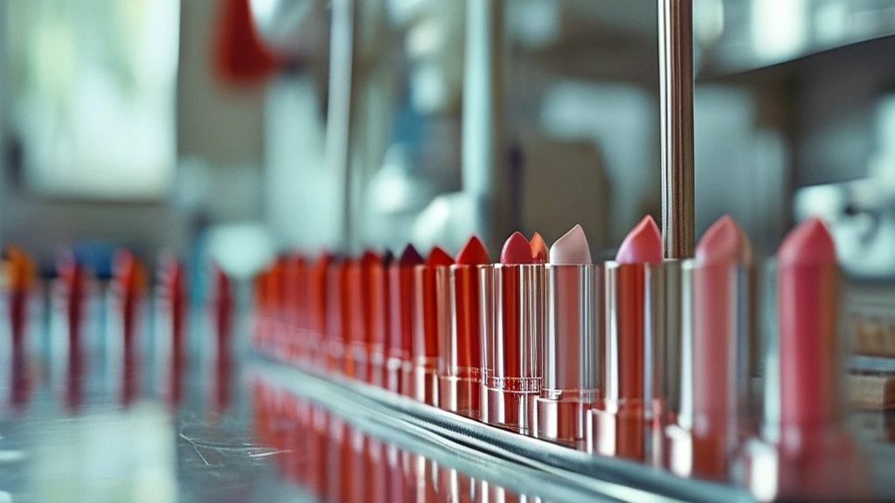
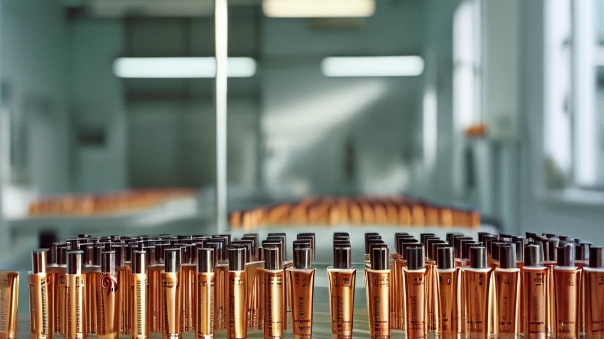

圖片由 AI輔助創作Image by AI
【鄭哥週評】欄目：鄭哥博客週評｜日期：2026-11-21
今年雙 11 美妝條數好靚：全網約 400 至 420 億元、按年升 12%。但我睇埋後面嗰行——退貨率升到 24.5%，抖音頭部品牌六成以上流量靠付費投放，平替彩妝白牌 Fomomy、HEDONE 接住執笠。我判斷：呢個禮拜成條化妝品線，唔係講「賣咗幾多」，係講「個牌桌換咗規則」——代工往頭部收、合規把換料嘅廠擋喺門外、料體嘅錢俾原料商同大集團食晒。
圖片由 AI輔助創作Image by AI
一、雙 11 賣咗 420 億，錢係買返嚟嘅
雙 11 美妝全網銷售約 400 至 420 億元、按年升約 12%，但全平台成交增速只有 5%–10%、退貨率升到 24.5%；抖音頭部美妝品牌 60% 以上流量靠付費投放，珀萊雅連續第 4 年位居天貓美妝榜首（搜狐）。
同一場大促，靠「大牌平替」起家嘅平價彩妝集體退場：Fomomy 閉店並負債近八位數，HEDONE 結業，VENUS MARBLE 關閉旗艦店，Uhue 宣布全面停止營運。
我判斷：GMV 係投流買返嚟嘅，唔係賣返嚟嘅；扣走 24.5% 退貨，好多場次根本唔賺錢，復購先係真正門檻。呢條會把國內美妝推向「唔再拼 GMV、改拼復購同自有供應鏈」——對代工嚟講，白牌死得快，接單要揀有復購、有牌品嘅客戶。
來源：搜狐《流量漲價、白牌退場 2026年「雙11」美妝「成年禮」迎利潤大考》，2026-11-14｜https://m.sohu.com/a/1100681270_393779
圖片由 AI輔助創作Image by AI
二、科絲美詩單季新高，訂單向頭部代工收
11 月 12 日，代工龍頭科絲美詩報三季度合併營收 8758 億韓元（約 43.7 億人民幣）、按年升 49.6%，營業利潤 833 億韓元、升約 95%；中國法人升 27%，上海、廣州兩地雙雙增長（亞洲日報）。
呢份業績唔係佢一間嘅事——同一批報出嘅係韓國三大 ODM 企業營收集體創歷史新高，大集團訂單愈嚟愈偏向有規模、有合規記錄嘅頭部廠。
我判斷：訂單正加速向頭部代工集中，中小廠接單更難、品牌方壓價空間喺縮。呢條把行業推向「規模即門檻」——冇規模嘅代工廠，要靠合規同特色料體先至搵到生路，唔可以再靠「平過人」接單。
來源：亞洲日報《韓國美妝出口持續火熱 三大ODM企業營收均創歷史新高》，2026-11-13｜https://www.ajudaily.com/view/20261112081501808

圖片由 AI輔助創作Image by AI
三、防曬抽檢四成唔合格，病根喺換料兩張皮
界面新聞引《化妝品觀察》統計，2026 年至今藥監局 8 則抽檢通告累計 302 批次唔合格，已逼近 2025 年全年嘅 324 批次；防曬以 121 批次、40.1% 佔比居榜首，廣東以 238 批次、78.8% 斷崖式領先，另有 47 批次檢出禁用原料（界面新聞）。
防曬嘅核心問題高度一致：成分比對不符——未檢出註冊資料載明嘅成分，或者配方調整咗卻冇重新註冊，抽檢時自然「貨不對板」。
我判斷：防曬嘅病根係註冊配方同生產兩張皮，代工廠為慳成本換料唔走變更，一抽就一串。呢條把行業推向「合規即門檻」——唔合規嘅中小代工會率先被擋喺特證同備案門外，識得把配方同生產對齊嘅代工，反而食到信任同訂單。
來源：界面新聞《2026年，這些美妝企業被列入「黑名單」》，2026-11-18｜https://www.jiemian.com/article/14665336.html
圖片由 AI輔助創作Image by AI
四、新原料錢俾上游食走：麥色濾 400 獲批
歐萊雅同巴斯夫共研嘅防曬劑「麥色濾 400」10 月底獲註冊，係《化妝品監督管理條例》後首個獲批嘅防曬新原料；理膚泉「大哥大」三款產品同步註冊，申報只用 10 個月（美通社）。
「原料＋產品並聯審評」把上市時間壓縮近兩年——原料先備案、產品搭住一齊過，先搶到嘅先食到溢價。
我判斷：料體嘅錢愈嚟愈俾上游原料商同大集團食，賣配方正喺變成賣備案資產。呢條把行業推向「揀料同囤備案」——代工要識揀有差異嘅料、識囤住備案資產，唔係淨係識攪同罐裝。
來源：美通社《歐萊雅集團「麥色濾400」防曬劑及其關聯產品理膚泉「大哥大防曬」同步獲批》，2026-11-15｜https://www.prnasia.com/story/555305-1.shtml
圖片由 AI輔助創作Image by AI
五、港企用三百萬流量費，把化妝品賣進東南亞
港資跨境企業投 300 幾萬流量費做東南亞美妝，拿香港 BUD 補貼約 70 萬（佔投入 25%），預計全年做到 5000 萬、增五成（香港文匯報）。
東南亞仲係低門檻增量市場，但贈品促銷好易傷價盤——GMV 上得快，價盤跌得仲快。
我判斷：出海接單係國貨代工嘅下一條生路，彩妝同色號嘅增量已經喺海外。呢條把行業推向「合規出海」——識做合規同色號開發嘅代工，先食到呢一波。
來源：香港文匯報《港企乘「雙11」出海 美妝遠銷東南亞》，2026-11-15｜https://www.wenweipo.com/a/202611/12/AP6af4cab9e4b028ec01939031.html
圖片由 AI輔助創作Image by AI
六、鄭哥週評
五條讀完，我最記得嘅唔係邊個賣得好，而係「增長」兩個字點嚟——買流量買返嚟、扣走退貨唔賺錢。
代工往頭部收、合規擋住換料嘅廠、料體嘅錢俾上游食晒——三條線指埋同一個方向：冇復購、冇合規、冇特色料體嘅，會被擠出牌桌。
我自己做護膚代工，彩妝同脣釉半成品呢一段喺合作廠（細節去官網 lumikeyskin.com 睇）。我判斷：脣釉半成品出海，唔好返國內投流嘅內卷牌桌，去接海外單、做合規代工、賣料體同備案資產——彩妝同色號呢段窗口仲開住，邊個識做合規同色號開發，邊個食到呢波。
圖片由 AI輔助創作Image by AI
\[Zheng Ge's Weekly Take\] Column: Zheng Ge's blog weekly take | Date: 2026-11-21
This year's Double 11 beauty numbers look great: roughly ¥40–42 billion across all platforms, up about 12% year on year. But I read the line behind them — the return rate climbed to 24.5%, over 60% of top Douyin brands' traffic is paid, and the dupe-makeup white labels Fomomy and HEDONE shut down one after another. My read: this week's whole cosmetics line isn't about 'how much got sold'; it's about the table's rules changing — manufacturing consolidating into the leaders, compliance shutting out the factories that quietly swap ingredients, and the money in the formula flowing to upstream material suppliers and the big groups.
圖片由 AI輔助創作Image by AI
1. Double 11 sold ¥42 billion, and the money was bought, not earned
Across the whole Double 11, beauty sold roughly ¥40–42 billion online, up about 12% year on year — but transaction growth across platforms was only 5%–10%, and the return rate climbed to 24.5%; over 60% of top Douyin beauty brands' traffic is paid, and Proya topped Tmall beauty for a fourth straight year (Sohu).
In the same sale, the budget colour-cosmetics brands that built themselves on 'dupes of big names' exited in a batch: Fomomy shut down owing close to eight figures, HEDONE folded, VENUS MARBLE closed its flagship store, and Uhue announced it was ceasing operations entirely.
My read: that GMV was bought with ad spend, not earned by selling; once you deduct the 24.5% return rate, a lot of those sessions simply don't make money, and repeat purchase is the real threshold. This pushes domestic beauty toward 'stop chasing GMV, start chasing repeat purchase and your own supply chain' — for OEMs, the white labels die fast, so pick customers who have repeat purchase and a real brand.
Source: 搜狐《流量漲價、白牌退場 2026年「雙11」美妝「成年禮」迎利潤大考》，2026-11-14 | https://m.sohu.com/a/1100681270_393779
圖片由 AI輔助創作Image by AI
2. Cosmax's record quarter — orders keep consolidating into the top OEMs
On 12 November the OEM leader Cosmax reported third-quarter consolidated revenue of KRW 875.8 billion (about ¥4.37 billion), up 49.6% year on year, with operating profit of KRW 83.3 billion, up about 95%; its China subsidiary rose 27%, with Shanghai and Guangzhou both growing (Aju Daily).
This result isn't about one company — the same batch of reports shows Korea's top three ODM makers all hitting record revenue, with big-group orders leaning ever more toward the large factories that have scale and a clean compliance record.
My read: orders are accelerating into the top OEMs, so mid- and small-factory orders get harder and brands' room to squeeze price is shrinking. This pushes the industry toward 'scale is the threshold' — an OEM without scale has to find a way out through compliance and distinctive formulas, not through 'cheaper than everyone else'.
Source: 亞洲日報《韓國美妝出口持續火熱 三大ODM企業營收均創歷史新高》，2026-11-13 | https://www.ajudaily.com/view/20261112081501808
圖片由 AI輔助創作Image by AI
3. Four in ten sunscreen batches fail spot-checks — the root is the two-ledger formula swap
Jiemian, citing Cosmetics Observation, tallied that so far in 2026 the NMPA's 8 spot-check notices have found 302 non-compliant batches, already close to the 324 batches for all of 2025; sunscreen leads with 121 batches, a 40.1% share, and Guangdong leads by a cliff with 238 batches, 78.8%, while another 47 batches were found with banned ingredients (Jiemian).
The core problem is strikingly uniform: ingredient mismatch — either the declared ingredient isn't detected, or the formula was changed without re-registering, so the product 'doesn't match the filing' when checked.
My read: the root cause is the two-ledger split between the registered formula and actual production — OEMs swap ingredients to cut cost without filing a change, and one spot-check pulls out a whole string. This pushes the industry toward 'compliance is the threshold' — non-compliant mid and small OEMs get shut out of special-permit and filing first, while those who keep formula and production aligned eat up the trust and the orders.
Source: 界面新聞《2026年，這些美妝企業被列入「黑名單」》，2026-11-18 | https://www.jiemian.com/article/14665336.html
圖片由 AI輔助創作Image by AI
4. The money in new ingredients flows upstream — Mexoryl 400 approved
The L'Oréal–BASF sunscreen agent 'Mexoryl 400' was registered in late October, the first new sunscreen raw ingredient approved since the Cosmetic Supervision and Administration Regulation; three La Roche-Posay 'Anthelios' products were registered in the same batch, and the filing took only 10 months (PR Newswire).
'Parallel review of raw ingredient plus product' compresses time-to-market by nearly two years — the ingredient gets filed first and the product rides through together, so whoever gets there first eats the premium.
My read: the money in the formula flows more and more to upstream material suppliers and the big groups; selling a formula is turning into selling registration assets. This pushes the industry toward 'pick materials and hoard registrations' — an OEM has to know how to pick differentiated ingredients and hold registration assets, not just mix and fill.
Source: 美通社《歐萊雅集團「麥色濾400」防曬劑及其關聯產品理膚泉「大哥大防曬」同步獲批》，2026-11-15 | https://www.prnasia.com/story/555305-1.shtml
圖片由 AI輔助創作Image by AI
5. A Hong Kong firm spends ¥3 million on traffic to sell cosmetics into Southeast Asia
A Hong Kong-funded cross-border firm poured more than ¥3 million into traffic fees for Southeast Asian beauty, drew about ¥700,000 (25% of the input) from Hong Kong's BUD subsidy, and expects to do ¥50 million for the full year, up 50% (Wen Wei Po).
Southeast Asia is still a low-threshold incremental market, but gift-and-promo tactics easily hurt the price structure — GMV climbs fast, the price floor falls faster.
My read: going overseas for orders is the next lifeline for domestic OEMs, and the colour-and-shade increment is already abroad. This pushes the industry toward 'compliant going global' — the OEMs that can do compliance and shade development eat this wave first.
Source: 香港文匯報《港企乘「雙11」出海 美妝遠銷東南亞》，2026-11-15 | https://www.wenweipo.com/a/202611/12/AP6af4cab9e4b028ec01939031.html
圖片由 AI輔助創作Image by AI
6. Zheng Ge Weekly Take
Reading all five, what stays with me isn't who sold well — it's where the 'growth' comes from: bought with ad spend, and after returns, not profitable.
Manufacturing consolidating into the leaders, compliance shutting out the ingredient-swappers, and the formula money flowing upstream — the three lines point the same way: no repeat purchase, no compliance, no distinctive formula, and you get pushed off the table.
I make skincare myself; the colour-cosmetics and lip-gloss semi-finished side sits with partner factories (details on lumikeyskin.com). My read: for lip-gloss semi-finished goods going overseas, don't go back to the domestic ad-spend rat race — take overseas orders, do compliant manufacturing, and sell formula and registration assets, not ad traffic. The colour and shade-development window is still open; whoever can do compliance and shade development eats this wave.